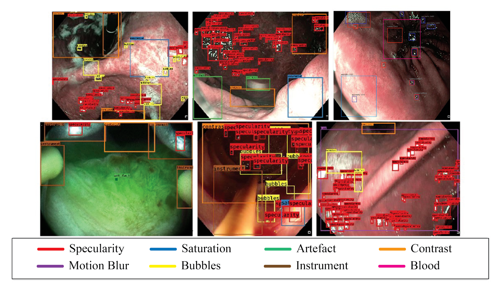

Proposed an ensemble of RetinaNet-based object detectors to localize bounding boxes and predict labels of eight different artefact classes that generalizes to an inter-patient, multi-tissue and a multi-modal corpus of endoscopy video frame data
The common artefacts of interest that corrupt endoscopy video frames include contrast, saturation, instrument, blood, specularity, blur, imaging artefacts and bubbles.
Achieved an mAP of 0.3405 improving existing state-of-the-art results
Thesis Link: Click Here
Literature Review Link: Click Here
The project was done as a part of the senior year B. Tech. thesis work.